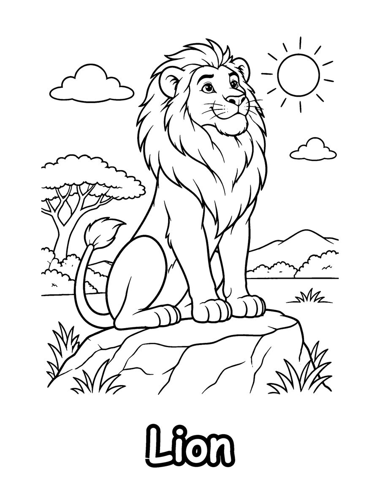
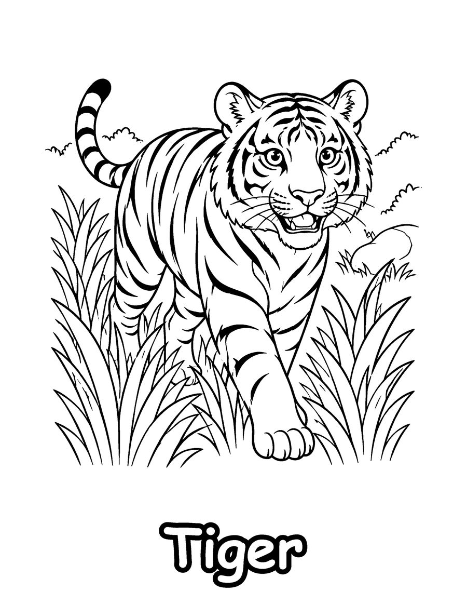
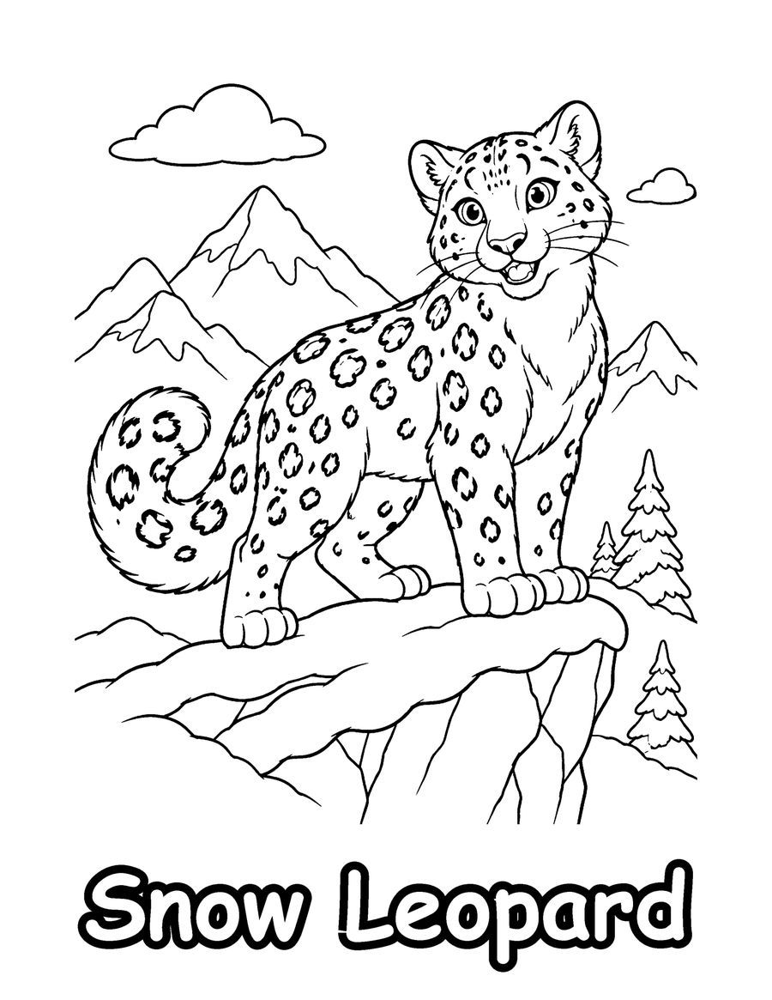

Cat lovers will enjoy these free cat coloring pages: a lion, a tiger and a snow leopard. They come from The Amazing Cat Family, a coloring book for kids ages 6 to 12 that shows 40 wild cats and pet cat breeds with their names, from lions and cheetahs to Sphynx and Maine Coon cats.
Cats make a great topic for animal science. The tiger is the largest wild cat, the lion is the one cat that lives in family groups called prides, and the snow leopard lives high in the mountains of Asia and cannot roar. Ask your child to compare the stripes, spots and manes, and notice how each coat helps the animal hide or stay warm. The pages suit animal units, homeschool lessons, birthday parties and quiet time at home. Print on US Letter paper at 100% scale and color with markers or colored pencils. The full book has 40 pages.
Your 3 free coloring pages

Tiger
Download free page (PDF)
Snow Leopard
Download free page (PDF)Printing tips
- Print at 100% scale on US Letter (8.5 x 11 in) paper. For A4, choose “Fit to page”.
- Use heavier paper (65 lb / 120 gsm or more) if you color with markers, so ink does not bleed through.
- Download the PDF first, then print from your PDF viewer for the sharpest lines.
Get all 40 pages
These 3 pages are a taste of The Amazing Cat Family (Kids 6-12). The full coloring book has 40 pages, ready to print or color in a book.
More free coloring pages

Free Safari Animal Coloring Pages
Teens & adults

Free Unicorn Coloring Pages for Kids
Kids 6-12

Free Koala Coloring Pages for Kids
Kids 6-12

Free Honey Badger Coloring Pages for Kids
Kids 6-12